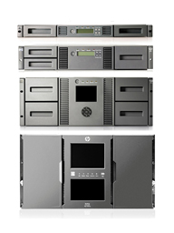

HPE StoreEver MSL Tech Specs:
- Multiple MSL hardware platforms
- 1/8 autoloader, MSL2024, MSL4048, MSL6480
- Half height drives 1/8 autoloader = 1
- Full height drives MSL2024 = 1
- Half height drives MSL2024 = 2
- Full height drives MSL4048 = 2
- Half height drives MSL4048 = 4
- Full height drives MSL6480 = 21
- Half height drives MSL6480 = 42
- Slots 1/8 autoloader = 8
- Slots MSL2024 = 24
- Slots MSL2048 = 48
- Slots MSL6480 = 80/module,
560 max
- Max capacity comp 1/8 autoloader = 50TB
- Max capacity comp MSL2024 = 150TB
- Max capacity comp MSL4048 = 300TB
- Max capacity comp MSL6480 = 3.5PB
- Max Trans rate autoloader = 1.44TB/hr
- Max Trans rate MSL2024 = 2.88TB/hr
- Max Trans rate MSL4048 = 5.76TB/hr
- Max Trans rate MSL6480 = 60.48TB/hr
- Interface:
- Mini-SAS (MSL SAS model only)
- LC Optical Fibre (MSL FC models only)
- (1)RJ-45 Ethernet
- (1)USB port